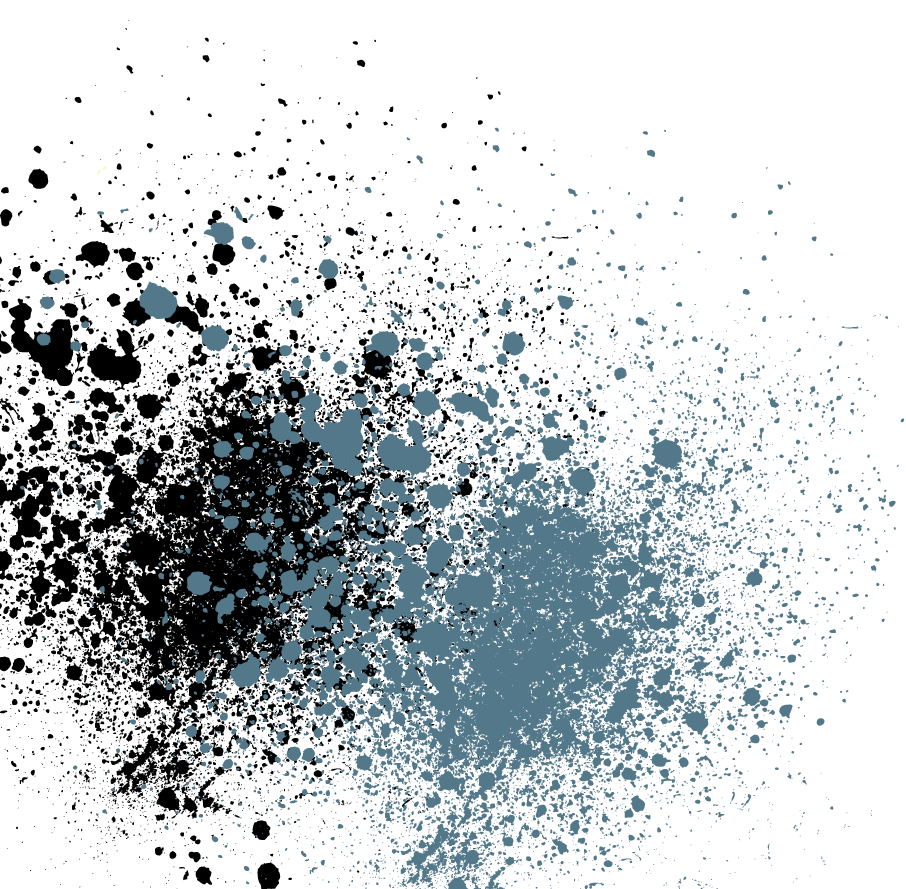
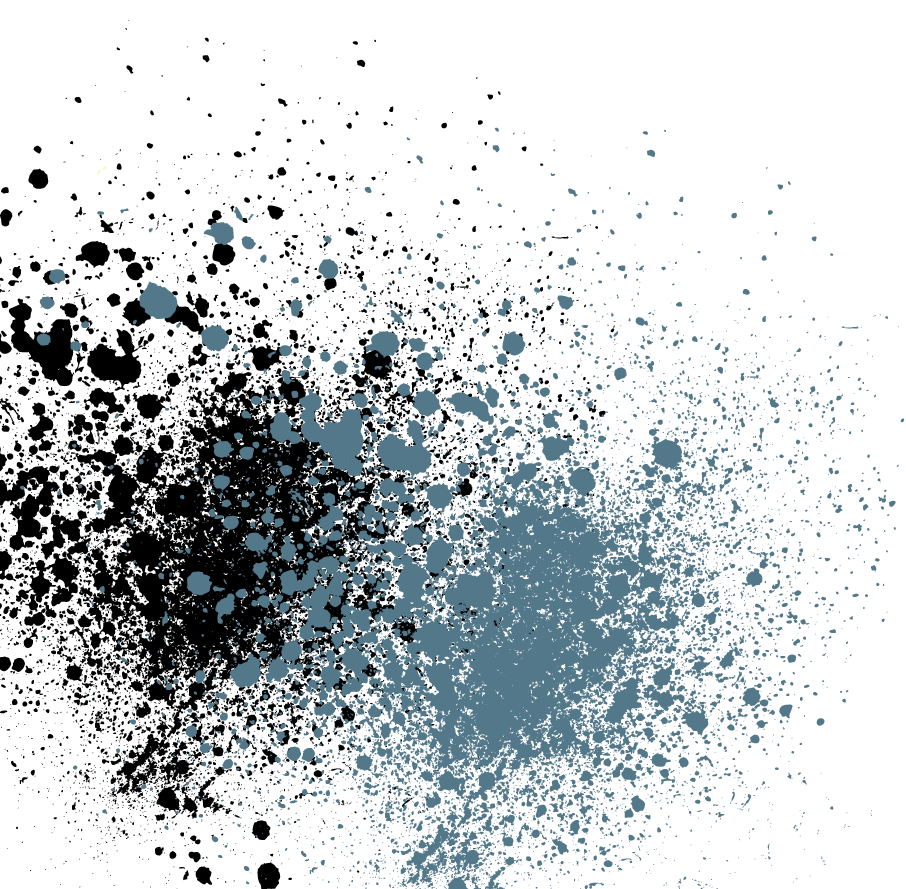
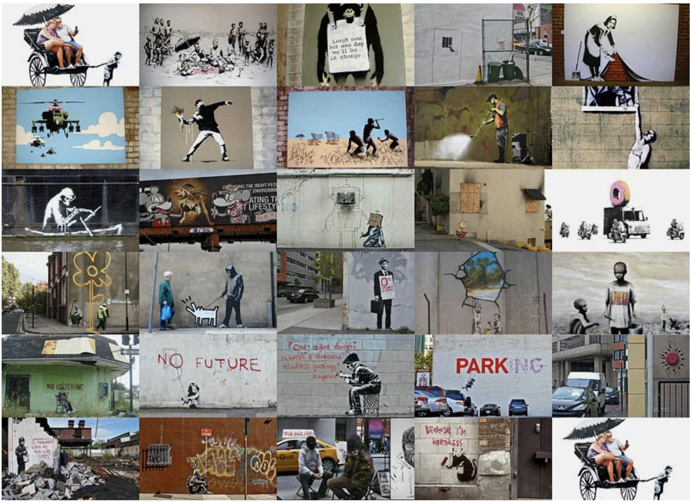

Работы
Мои любимые работы бенкси
В первые я наткнулся именно на эти работы Бенкси и познакомили с его творческим видением. Больше всего запомнились его комментарий: "Граффите - это одно из немногих срдеств самовыражения, которое ты можешь себе позволить, даже если ты не имеешь ничего. И даже если ты не расправишься при помощи граффити с мировой нищетой, ты можешь заставить кого-то улыбнутся, пока он писает"
No Future

Многие считают «No Future» одним из самых острых произведений искусства Бэнкси. Оно появилось на стене частной резиденции в Саутгемптоне, но был закрашен в ноябре 2010 года всего через неделю после размещения. Буква «O» в подписи удваивается как воздушный шар, давая зрителю дозу иронии, так как воздушные шары чаще являются причиной радости для детей.
Smiley Grim Reaper

«Smiley Grim Reaper» показывает светлую сторону смерти со знакомой фигурой в капюшоне, которая заменяется жёлтым смайликом. Работа все еще видна, хотя несколько тегов были наложены поверх нее.
I Remember When All This Was Trees

Работа появилась на заброшенном «Packard auto-mobile plat» в Детройте. В настоящее время ведутся дебаты по вопросу о том, кто несет ответственность за расходы по очистке заброшенного участка, поэтому, вероятно, не следует удивляться тому, что появление Бэнкси также вызвало дебаты вокруг собственности. В конечном работа была демонтирована и теперь ее можно увидеть на выставке в галерее 555.
Mobile Phone Lovers

Мобильные любовники вызвали ажиотаж, когда он появился рядом с клубом в родном городе Бэнкси Бристоле. Владелец клуба снял дверь с намерением использовать ее для сбора средств для своего клуба, но она была отобрана у него местным советом, который претендовал на владение.
Monkey Parliament
Работа Бэнкси, показывающая членов парламента в виде шимпанзе, теперь демонстрируется в Бристольском музее и художественной галерее в честь Дня Брекзита. Произведение было создано более 10 лет назад.
Man hanging from window

Это, пожалуй, одна из самых знаменитых работ Бэнкси, и на ней изображен человек, свисающий с окна после того, как его тайная интрижка была раскрыта мужем его любовницы. С типичной для Бэнкси иронией он создал эту работу на стороне клиники сексуального здоровья на Фрогмор-Стрит.
If Graffiti Changed Anything – It Would be Illegal
 

Одна из наиболее “значимых” работ Бэнкси, это было обнаружено в фитцровии (Лондон) в апреле 2011 года. На ней изображена крыса с красной краской на лапе и отпечатком лапы на стене рядом с ней. Он стоит под фразой “Если граффити что-то изменят, это будет незаконно”. Похоже, что это удар по правительству из-за ссылки на цитату Эммы Голдман: “если голосование когда-либо изменит что-либо, это будет незаконно”. Она проводила кампанию за права женщин и голосование, и Бэнкси мог бы подчеркнуть тот факт, что каждый отдельный голос может редко что-то менять. Если граффити что-то изменит, это будет нелегальное место.
Бэнкси и брексит
Выход Великобритании из Европейского союза
Twin Towers

На 15-й день своего турне Бэнкси создал работу в дань терактам 11 сентября. Он нарисовал силуэт башен-близнецов и добавил оранжевый цветок, чтобы представить взрыв.
